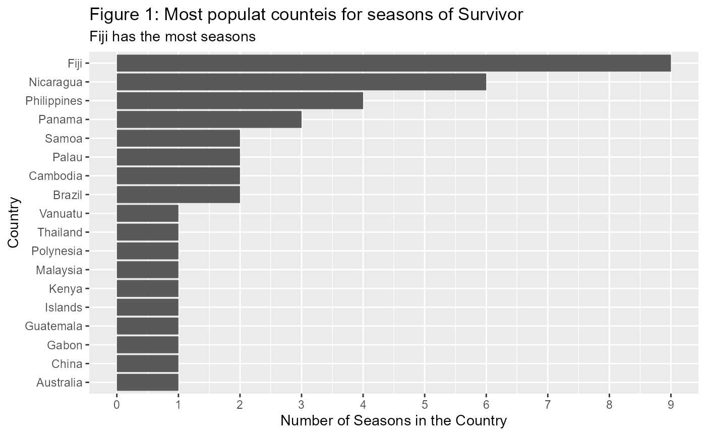
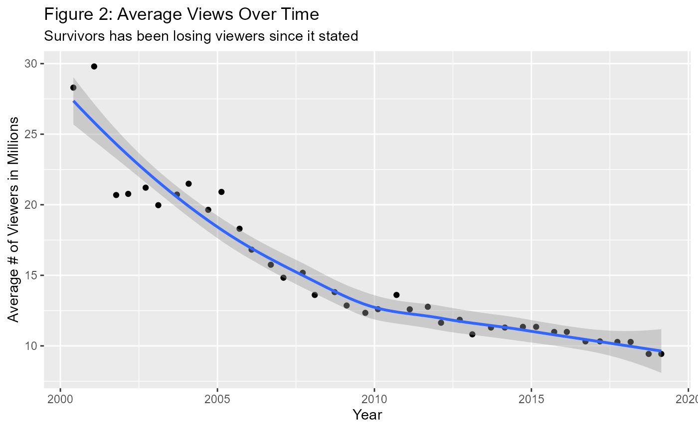
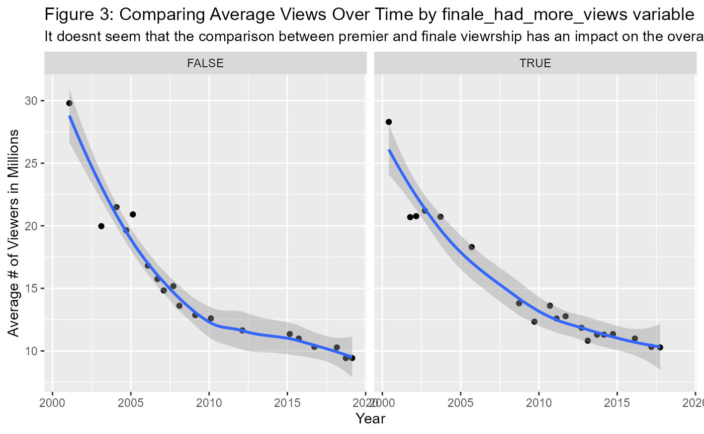

Example analysis
Taner Bertuna
2022-12-13
Source:vignettes/Example_Analysis.Rmd
Example_Analysis.RmdObjective: The objective of this data analysis is to explore the trends in viewership for the reality TV show Survivor.
Link to the data and the data dictionary: https://github.com/rfordatascience/tidytuesday/blob/master/data/2021/2021-06-01/readme.md
The data:
The data is from the survisorR package, created by Daniel Oehm. The data set compiles data on the first 40 seasons of survivor, indluding location, viewership information, season winner, and important dates for each season, etc.
## -- Attaching packages --------------------------------------- tidyverse 1.3.1 --## v ggplot2 3.3.5 v purrr 0.3.4
## v tibble 3.1.6 v dplyr 1.0.8
## v tidyr 1.2.0 v stringr 1.4.0
## v readr 2.1.2 v forcats 0.5.1## -- Conflicts ------------------------------------------ tidyverse_conflicts() --
## x dplyr::filter() masks stats::filter()
## x dplyr::lag() masks stats::lag()## Warning: package 'here' was built under R version 4.1.3## here() starts at C:/Users/taner/Desktop/Documents/Statistical_Programming/HW3##
## Attaching package: 'table1'## The following objects are masked from 'package:base':
##
## units, units<-## Warning: package 'flextable' was built under R version 4.1.3##
## Attaching package: 'flextable'## The following object is masked from 'package:purrr':
##
## composeLoad Data
if(!dir.exists(here("data"))) { dir.create(here("data")) }
if(!file.exists(here("data","survivor_summary.RData"))){
survivor_summary <- readr::read_csv('https://raw.githubusercontent.com/rfordatascience/tidytuesday/master/data/2021/2021-06-01/summary.csv')
save(survivor_summary, file = here("data","survivor_summary.RData"))
} What is the sum of season finale views.
## [1] 621.68Make a column that notes if the finale had more views than the premier
finale_views <- survivor_summary %>% pluck(16)
prem_views <- survivor_summary %>% pluck(15)
prem_views_df <- prem_views %>% as.data.frame()
finale_views_df <- finale_views %>% as.data.frame()
finale_views_flex <- structure(finale_views, class = "flextable")
prem_views_flex <- structure(prem_views, class = "flextable")
finale_more_view <- function(x) {
x > 0
}
Finale_minus_prem <- function(prem, finale) {
finale - prem
}
comp_test <- purrr::compose(finale_more_view, Finale_minus_prem)
prem_vs_finale <- comp_test(prem_views_df, finale_views_df)
survivor_summary <- survivor_summary %>% mutate(finale_had_more_views = prem_vs_finale)
survivor_summary %>% count(finale_had_more_views)## # A tibble: 2 x 2
## finale_had_more_views[,"."] n
## <lgl> <int>
## 1 FALSE 19
## 2 TRUE 21Calculate mean views for each country
mean_views_by_country <- survivor_summary %>%
select(c(country, viewers_mean)) %>%
group_by(country) %>%
filter(!is.na(viewers_mean)) %>%
summarise(views_by_country = mean(viewers_mean)) %>%
as_tibble()
survivor_summary %>% count(country) %>%
mutate(country = fct_reorder(country, n)) %>%
ggplot(aes(y = country, x = n)) +
geom_bar(stat = "identity") +
xlim(0,10) +
scale_x_continuous(n.breaks = 10) +
xlab("Number of Seasons in the Country") +
ylab("Country") +
ggtitle("Figure 1: Most populat counteis for seasons of Survivor") +
labs(subtitle = "Fiji has the most seasons")## Scale for 'x' is already present. Adding another scale for 'x', which will
## replace the existing scale.
survivor_summary %>%
na.omit(viewers_mean) %>%
ggplot(aes(x = premiered, y = viewers_mean)) +
geom_point() +
geom_smooth() +
xlab("Year") +
ylab("Average # of Viewers in Millions") +
ggtitle("Figure 2: Average Views Over Time") +
labs(subtitle = "Survivors has been losing viewers since it stated")## `geom_smooth()` using method = 'loess' and formula 'y ~ x'
survivor_summary %>%
na.omit(viewers_mean) %>%
ggplot(aes(x = premiered, y = viewers_mean)) +
geom_point() +
geom_smooth() +
xlab("Year") +
ylab("Average # of Viewers in Millions") +
ggtitle("Figure 3: Comparing Average Views Over Time by finale_had_more_views variable") +
labs(subtitle = "It doesnt seem that the comparison between premier and finale viewrship has an impact on the overall trend of viewership") +
facet_wrap(finale_had_more_views ~ .) ## `geom_smooth()` using method = 'loess' and formula 'y ~ x' Use table 1 functions
# Make table 1
table_1 <- table1(~ viewers_mean | factor(finale_had_more_views), data=survivor_summary)
#Convert table 1 to a df
df_table_1 <- table_1 %>% as.data.frame()
#Display using flextable
flextable(df_table_1)
|
FALSE |
TRUE |
Overall |
|---|---|---|---|
(N=19) |
(N=21) |
(N=40) |
|
viewers_mean |
|||
Mean (SD) |
15.1 (5.30) |
14.9 (5.13) |
15.0 (5.15) |
Median [Min, Max] |
13.6 [9.43, 29.8] |
12.6 [10.3, 28.3] |
12.8 [9.43, 29.8] |
Missing |
0 (0%) |
2 (9.5%) |
2 (5.0%) |
Looking at the data it appears that there is little difference in average viewers between seasons where the finale had more views than the premier.
Functions Used: dyplr - filter, select, mutate, group_by, summarise, as_tibble forecats - fct_reorder table1 - table1, as.data.frame (this converts a table1 object to a df) purrr - compose, pluck